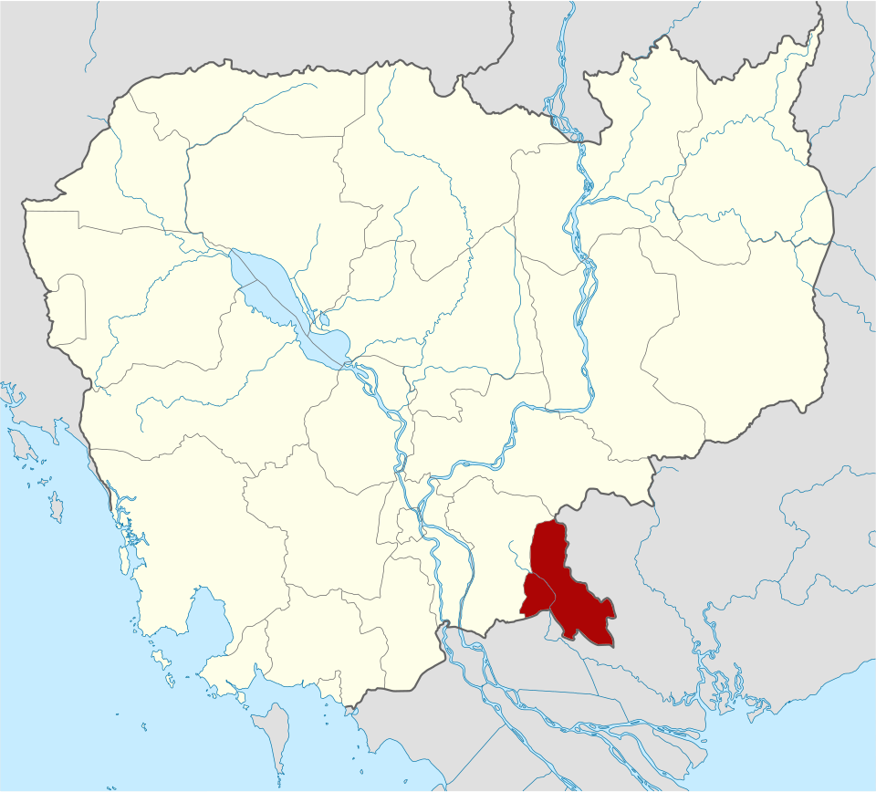
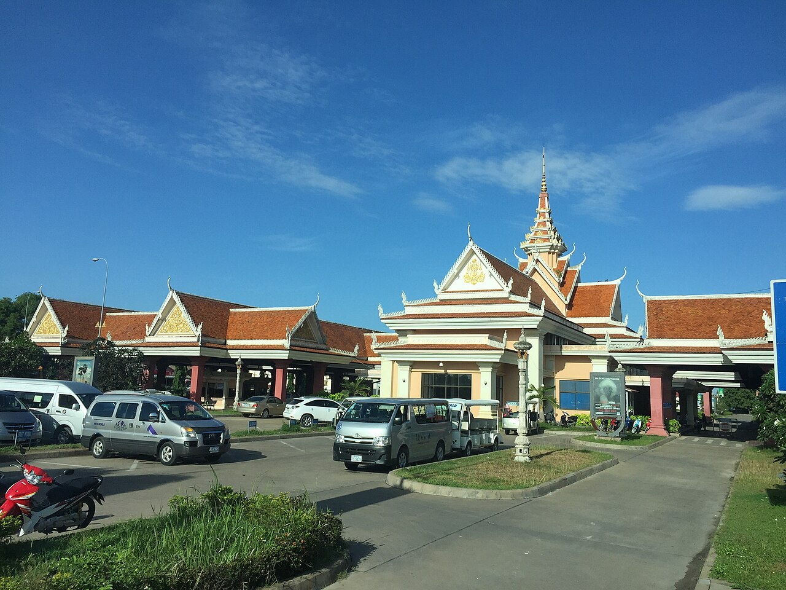
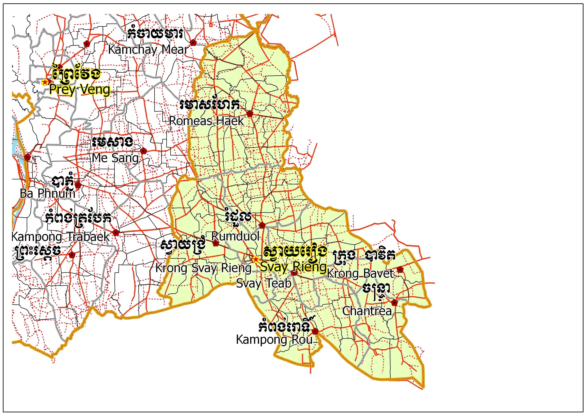
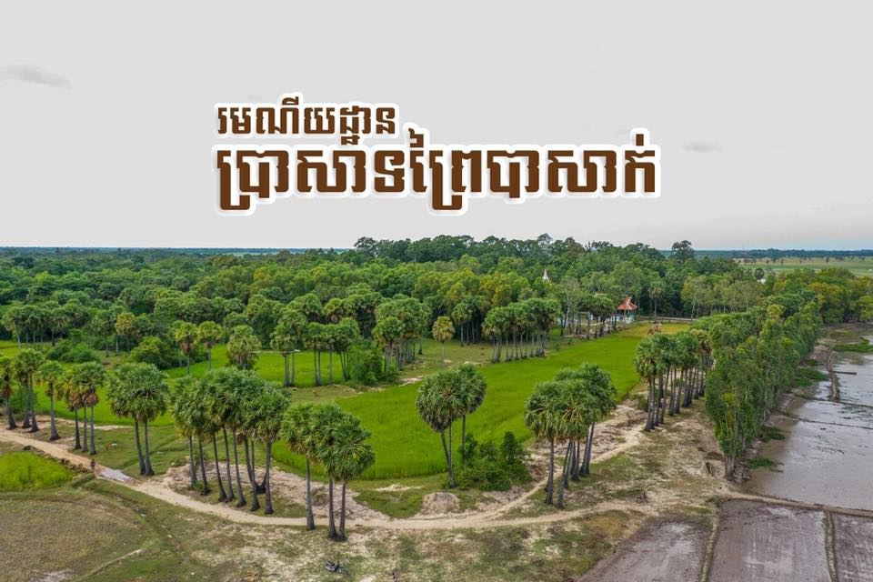

Svay Rieng
← ត្រឡប់ទៅផែនទីខេត្តស្វាយរៀង គឺជាខេត្តមួយដែលស្ថិតនៅអាគ្នេយ៍ (ខាងត្បូងឈៀងខាងកើត) នៃប្រទេសកម្ពុជា។ ហើយទីក្រុងខេត្តស្វាយរៀង មានឈ្មោះថា ទីក្រុងស្វាយរៀង ។ ខេត្តស្វាយរៀងមានព្រំប្រទល់ជាប់ប្រទេសវៀតណាមខាងកើតនឹងខាងត្បូង និងខេត្តព្រៃវែងខាងលិចនឹងខាងជើង។ តាមលក្ខណៈភូមិសាស្ត្រខេត្តស្វាយរៀង។ តំបន់នេះជាផ្នែកមួយនៃកសិកម្មរបស់កម្ពុជាជាចម្បង ដោយការធ្វើកសិកម្មជាសកម្មភាពសេដ្ឋកិច្ចសំខាន់។ ការដាំដុះស្រូវគឺជាការអនុវត្តកសិកម្មលេចធ្លោរួមជាមួយនឹងដំណាំផ្សេងទៀតដូចជាពោត ដំឡូងមី និងកៅស៊ូ។ខេត្តស្វាយរៀង មានប្រវត្តិដ៏យូរលង់នឹងបេតិកភណ្ឌវប្បធម៌ដ៏សម្បូរបែប។ ខេត្តស្វាយរៀងត្រូវបានគេស្គាល់ថាសម្រាប់តួនាទីដ៏សំខាន់របស់ខ្លួនក្នុងអំឡុងសង្គ្រាមវៀតណាម ជាពិសេសសមរភូមិស្វាយរៀងក្នុងឆ្នាំ១៩៧១។ ខេត្តនេះក៏មានវត្តអារាម និងកន្លែងប្រវត្តិសាស្ត្រជាច្រើនដែលទាក់ទាញភ្ញៀវទេសចរផងដែរ។ ស្វាយរៀងបានឆ្លងកាត់ការអភិវឌ្ឍន៍មួយចំនួន រួមទាំងការកែលម្អហេដ្ឋារចនាសម្ព័ន្ធ និងការតភ្ជាប់ផ្លូវគមនាគមន៍ផងដែរ។ សាកលវិទ្យាល័យស្វាយរៀង បង្កើតឡើងក្នុងឆ្នាំ២០០៧ ផ្តល់ឱកាសសិក្សាថ្នាក់ឧត្តមសិក្សាដល់និស្សិតក្នុងស្រុក។ ខេត្តស្វាយរៀង ផ្តល់នូវទិដ្ឋភាពនៃជីវភាពរស់នៅបែបជនបទរបស់ខ្មែរ ជាមួយនឹងទេសភាពកសិកម្ម និងសារៈសំខាន់ជាប្រវត្តិសាស្ត្រ។ ខេត្តស្វាយរៀងជាកន្លែងមួយដែលភ្ញៀវទេសចរអាចស្វែងយល់ពីជនបទ ស្វែងយល់ពីវប្បធម៌ក្នុងតំបន់ និងទទួលបានបទពិសោធន៍ពីសម្រស់ធម្មជាតិនៃតំបន់។

ខេត្ដស្វាយរៀង ឋិតនៅភាគអាគ្នេយ៍នៃប្រទេសកម្ពុជា ជាប់ព្រំប្រទល់ជាមួយប្រទេសវៀតណាម ដែលមានច្រកព្រំដែនអន្ដរជាតិមួយល្បីឈ្មោះគឺច្រកព្រំដែនបាវិត ឋិតនៅចម្ងាយប្រមាណ ៤៨គីឡូម៉ែត្រពីទីរួមខេត្ដស្វាយរៀង។ ធ្វើដំណើរតាមផ្លូវជាតិលេខ១ចម្ងាយប្រមាណ១២២គីឡូម៉ែត្រពីទីក្រុងភ្នំពេញ ។ បាវិតជាច្រកដ៏សំខាន់សម្រាប់ចរាចរផ្លូវគោក ទំនាក់ទំនងរវាងប្រទេសទាំងពីរគឺកម្ពុជានិងវៀតណាម ជាពិសេសគឺទីក្រុងភ្នំពេញ និងទីក្រុងហូជីមិញ។ ក្រៅពីការបង្កើតជាតំបន់កំសាន្ដហើយ តំបន់នេះនៅមានផ្សារណាត់ដែលមានទំនិញគ្រប់ប្រភេទជាផលិតផលក្នុងស្រុក និងផលិតផលពីប្រទេសវៀតណាម។ ច្រកព្រំដែនបាវិតគឺជាមជ្ឈមណ្ឌលទេសចរ ដែលទាក់ទាញភ្ញៀវទេសចរបានច្រើនជាងគេក្នុងចំណោមតំបន់កំសាន្ដក្នុងខេត្ដនេះ។


ខេត្តស្វាយរៀង រួមមាន ៨ស្រុក ក្រុង ៖
រមណីយដ្ឋានប្រាសាទព្រៃបាសាក់៖ ព្រៃបាសាក់ ឬព្រៃប្រាសាទ មានទីតាំងស្ថិតនៅក្នុងភូមិបាសាក់ ឃុំបាសាក់ ស្រុកស្វាយជ្រំ ខេត្តស្វាយរៀង និងមានចម្ងាយ ៨.៥គីឡូម៉ែត្រ ពីទីរួមខេត្តស្វាយរៀង។ ភ្ញៀវទេសចរអាចធ្វើដំណើរដោយរថយន្តតាមផ្លូវបេតុង ប៉ុន្តែនៅរដូវវស្សាក៏អាចធ្វើដំណើរតាមផ្លូវទឹកនៃដងទន្លេវ៉ៃគោ ក្នុងចម្ងាយ ត្រឹមតែ៥គីឡូម៉ែត្រប៉ុណ្ណោះ។ ព្រៃបាសាក់មានផ្ទៃដីសរុប ៩ហិកតា ២៤អា និង៩៨សង់ទីអា មានព្រំប្រទល់ខាងជើង និងខាងកើតជាប់នឹងទន្លេវ៉ៃគោ ខាងត្បូង និងខាង លិចជាប់នឹងភូមិអ្នកស្រុក។ នៅចំកណ្ដាលព្រៃបាសាក់មានប្រសាទចំនួនពីរ គឺទួលប្រសាទ និងទួលគក់សំពៅ ទួលទាំងពីរនេះឃ្លាតគ្នាប្រវែងប្រមាណ១០០ម៉ែត្រតែប៉ុណ្ណោះ ចំណែកឯទួលប្រសាទ គឺមានសេសសល់ «ទួលប្រាងប្រាសាទ» មួយចំហៀងមានកម្ពស់ ២ម៉ែត្រ បណ្ដោយ៥ម៉ែត្រ សង់ឡើងពីឥដ្ឋធំៗ។ ប្រាង្គប្រសាទនេះសាងឡើងប្រហែលសតវត្សទី៦ រចនាបទសំបូរព្រៃគុហ៍មកម្លេះ ហើយលើទួលប្រាសាទនេះដែរសុទ្ធសឹងជាគ្រឹះថ្ម ដែលបានតម្រៀបជាថ្នាក់ៗ ជាប្រភេទថ្មបាយក្រៀម និងដុំឥដ្ឋធំៗ។ ចំណែកទួកគក់សំពៅ មានសណ្ឋានដូចជា សំពៅវែងប្រវែងប្រមាន ២៥ម៉ែត្រ កម្ពស់ ៤ម៉ែត្រ ចំណែកឯជាយសងខាងនៃទួលមានតម្រៀបដោយថ្មបាយក្រៀម និងដុំឥដ្ឋជាថ្នាក់ៗផងដែរ។

ប្រាសាទជីហោ៖ ប្រសាទជីហោ គឺជាប្រាសាទមួយដែលមានវ័យចំណាស់ជាងគេក្នុងខេត្តស្វាយរៀង ស្ថិតនៅតំបន់ឦសាននៃទីរួមខេត្តស្វាយរៀង ចម្ងាយប្រមាណ ៥៨គីឡូម៉ែត្រ។ ប្រាសាទនេះ កសាងឡើងក្នុងកំឡុងសតវត្សទី៦ (លំនាំរចនាបទសំបូរព្រៃគុហ៍) សង់នៅលើទីទួលមួយកន្លែងមានកម្ពស់ ៣ម៉ែត្រ ទំហំ ៥០ម៉ែត្រ បួនជ្រុង ប្របតាមមាត់ទន្លេជាប់ព្រំប្រទល់ដែន កម្ពុជា-វៀតណាម ។ រីឯតួប្រាសាទធ្វើអំពីឥដ្ឋ និងថ្មបាយក្រៀមពីទិសខាងកើត ក្រៅពីនេះមានសុទ្ធតែទ្វារបង្អួចបញ្ឆោត បិទជាប់ជញ្ជាំង។ ចំពោះទ្វារ មេបង្អួចក្បាច់ផ្ងា និងក្បាច់ផ្សេងៗទៀតធ្វើអំពីដីដុតទាំងអស់។